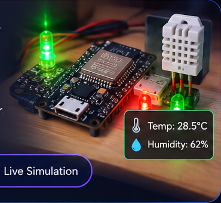
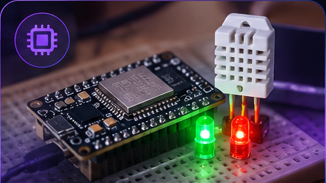

Embedded Systems, IoT, and Artificial Intelligence Projects

ESP32-based temperature and humidity monitoring system using a DHT22 sensor and LED indicators.
Live Simulation Source Code
Smart environmental monitoring using ESP32, sensors, Wokwi simulation, n8n automation, AI analysis, and Telegram notifications.
Wokwi GitHubAI-powered educational assistant built with n8n, OpenAI, and Telegram to explain lessons, summarize topics, and generate practice questions.
Try the Bot